Hello everyone! Welcome back to my blog where I dive into the inner workings of Bootstrap and explain my
findings and research to you, the reader. In this blog post, I will work off what I had previously explained
in my last blog post, where I gave you all a basic rundown on how to setup and use Bootstrap. In this blog
post, I will be completely building a website from scratch using the tips and tricks I showed off in my
previous demo to demonstrate the simplicity of creating websites using Bootstrap.
The Site
To get things started, I needed to set a foundation for my website. I created a brand-new repository on
GitHub to store all my work in, and to use GitHub Pages.
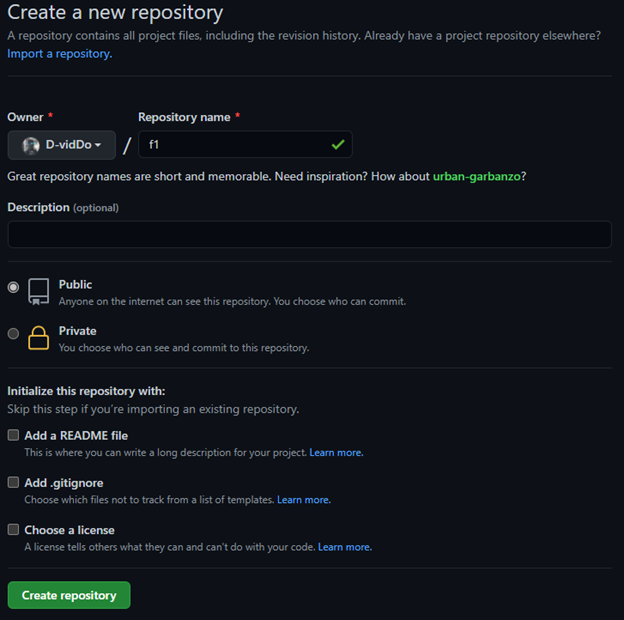
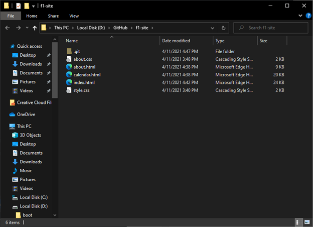
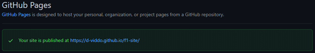
With the foundation set, its time to code! The theme for my website is Formula 1, a motorsport that is
touted as the pinnacle of motorsport, with drivers in F1 representing the best drivers in the world. With a
theme in mind, I wanted to start with a navigation bar so that the user can navigate this website. Using
Bootstraps official documentation, I added a navigation bar into my code.
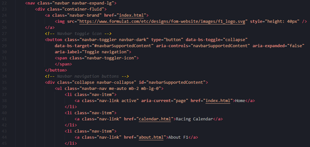
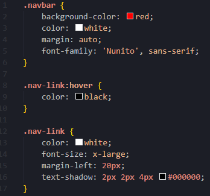
Now with a nice-looking navigation bar, lets spice up the home page a little bit because it is a blank
canvas right now. I want to add a slideshow to the homepage to add some fluff to the home page, so I did
just that. Once again, I grabbed a carousel component from the Bootstrap documentation and tweaked it to
suit my page.
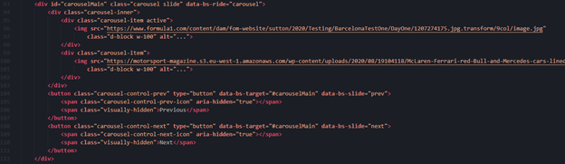
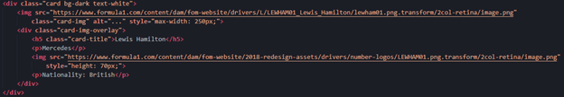
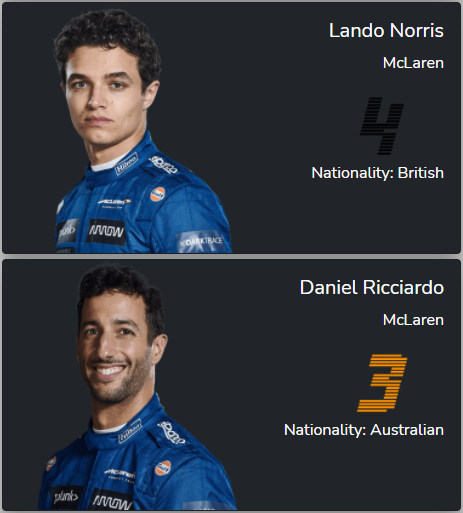
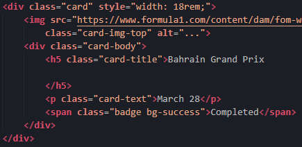
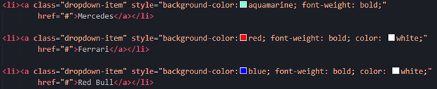
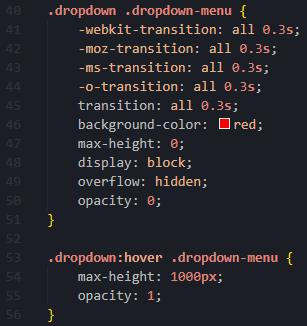
Now that this project has some heft to it, its time to push it to master and publish it online for you to
see for yourselves. I used GitHub Desktop to do all my pushes for me because I like UI and pushing using CLI
makes me sus.
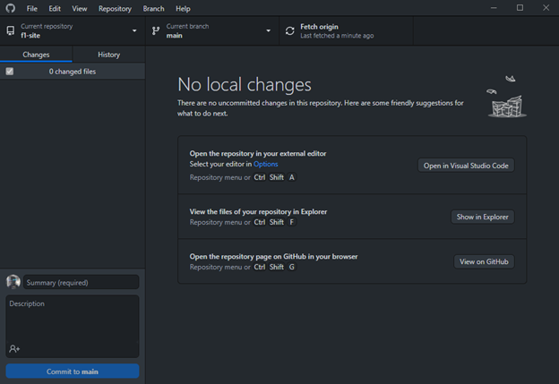
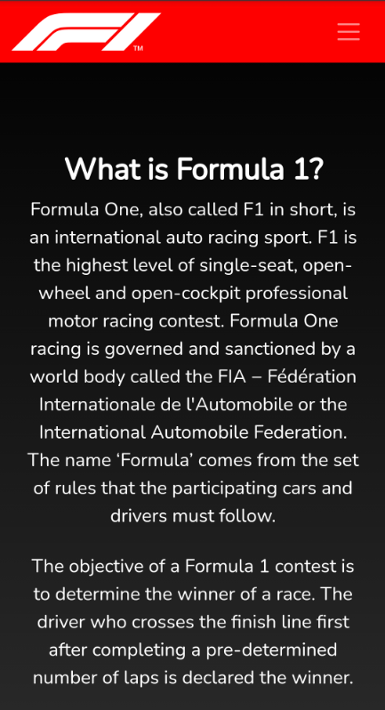